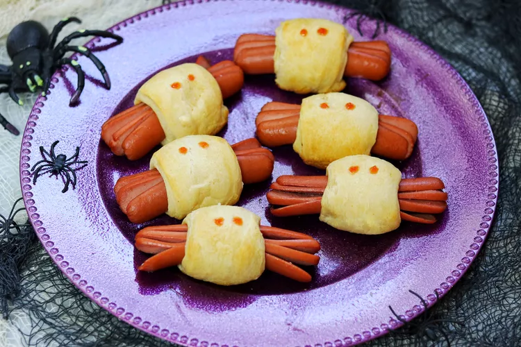

Spooky Spider Halloween Hot Dogs

Use crescent rolls and hot dogs to make this Halloween version of pigs in a blanket. Kids love them, and they are an easy snack for a Halloween party.
Ingredients
- 1 (8 ounce) can refrigerated crescent rolls
- 8 hot dogs
- 2 tablespoons ketchup, or to taste
Steps
- Preheat the oven to 375 degrees F (190 degrees C).
- Unroll crescent dough. Pinch or press the perforation between the triangles to get 4 rectangular pieces. Cut rectangles in half lengthwise so you have 8 narrow strips.
- Make a 2-inch slice through the center of one end of a hot dog. Cut two more 2-inch slices on either side of that, so that the 'legs' are about the same thickness. Repeat on the other end. Cut 'legs' into the remaining hot dogs.
- Roll a crescent strip around the center of each dog. Place spider dogs on an ungreased baking sheet.
- Bake in the preheated oven until golden brown, about 11 minutes. Dip a chopstick into some ketchup and dot 'eyes' onto each spider. Serve with remaining ketchup.
Return to Homepage